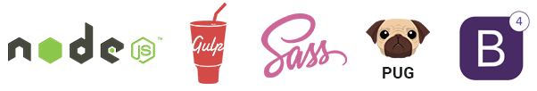

Dev environment setup
Please note: this step is absolutely optional. It aims for advanced user who want to speed up development process with professional grade Front-End toolset shiped with Around. If you are not familiar with these tools and have no time to dive in you can still use plain HTML / CSS / JS to customize Around. Files you need are located inside Around/dist folder. In this case you can skip this and next sections. Happy coding :)
Around is built using modern development toolset.
- Node.js Official website
- Is a JavaScript runtime built on Chrome's V8 JavaScript engine. Node.js uses an event-driven, non-blocking I/O model that makes it lightweight and efficient. Node.js' package ecosystem, npm, is the largest ecosystem of open source libraries in the world.
- Gulp Official website
- The JavaScript task runner. It helps with performing repetitive tasks like minification, compilation, unit testing, linting, etc. This is possible thanks to extensive Gulp Plugins library.
- Sass (Syntactically Awesome Style Sheets) Official website
- Sass is a scripting language that is interpreted or compiled into Cascading Style Sheets (CSS). It is the most mature, stable, and powerful professional grade CSS extension language in the world. Sass gives you the power of variables, mixins, functions, etc.
- Pug (former Jade) Official website
- Pug is a high performance Node.js Templating Engine. Just like SASS, Pug is a prepocessor and, as such it helps you accomplishing tasks like wrapping away repetitive work by providing features not available in plain HTML like variables, includes, mixins, functions, etc.
- Bootstrap 4 Official website
- Latest version of the most popular HTML, CSS, and JS framework in the world. Around is built on Bootstrap 4 and heavily depends on it. Around has all BS4 components + bunch of own plugins and components.
This section will explain how to setup professional Front-End development environment for fast and smooth Around customization using these technologies.
Text Editor and Terminal (Command Line)
You can use any text editor at your disposal and available Command line tool (Command Prompt for Windows or Terminal on MacOS). Our personal preference is Visual Studio Code. It is free, has great buil-in terminal (console), built-in git client, debugging, huge extensions library and available for MacOS, Windows, Linux.
Installing Node.js and npm
In order to be able to setup Around development environment you will need to install Node.js and its Package Manager (npm).
Node.js is absolutely free and available for download via its official website for MacOS, Windows, Linux systems. Download Node.js and npm here.
Learn more about Node Package Manager and available packages here: https://www.npmjs.com
Installing packages necessary for Around development
When Node.js and npm is installed you are ready to install all dependencies necessary for Around development.
Inside your command line tool type:npm installThis will start the process of installing all dependencies which are listed inside Around/package.json file. Wait until installation is finished and jump to the next section Working with Gulp.